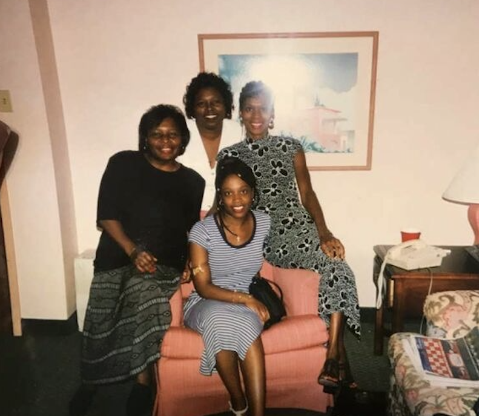

toni morrison + the family: black motherhood is radical joy.

Chloe Anthony Wofford Morrison, aka Toni Morrison is an award winning novelist. Morrison's novels continue to receive praise as well as be studied in many courses for her depiction of African American life. Each of her novels and even essays shine a light on the numanity or lack therof within Black life and forces us as a community to grapple with the traumas from the past that are continued in our bloodlines.
morrison on motherhood: liberation
the following is a quote from morrison's interview with Bill Moyers
morrison: There was something so valuable about what happened when one became a mother. For me it was the most liberating thing that ever happened to me.
moyers: Liberating? Isn't every mother a hostage to love?
morrison: Liberating because the demands that children make are not the demands of a normal “other.” The children’s demands on me were things that nobody else ever asked me to do. To be a good manager. To have a sense of humour. To deliver something that somebody could use. And they were not interested in all the things that other people were interested in, like what I was wearing or if I were sensual … Somehow all of the baggage that I had accumulated as a person about what was valuable just fell away. I could not only be me—whatever that was—but somebody actually needed me to be that … If you listen to them, somehow you are able to free yourself from baggage and vanity and all sorts of things, and deliver a better self, one that you like. The person that was in me that I liked best was the one my children seemed to want.
my life + the jumpoff.

This website is 100% coded and created by me! I previously was interested in being a Computer Science major as well as being a former Women's Gender and Sexuality Studies (modified with AAAS) major. My experiences in college as well as moving thorugh life as a Black woman raised by a single mother have really shaped my thoguhts on motherhood, as well as informed me to write about the subject. My goal within this website is to create a multimedia space that encourages us to consider the ways in which Morrison, along with other authors, artistsm activists, musicians and more, reflect on the highs, lows and joys of Black motherhood. I was really inspired by Leah Writhg Rigueur's "The Persistent Joy of Black Mothers" article written for The Atlantic. In it, Rigueur discusses how the existence of Black women, in the face of so many microaggressions, so much bigotry and so many hardships becomes a form of resistance and radical or "violent" joy.
I enter my own thoughts here, as Black mothers do not just raise children, but communities. Black mothers take care of everyone dating back to slavery, when they were forced to make sure Massa's babies were clothed and fed before their own. I witnessed my own mother make huge sacrifices as a single mother of three young girls, facing abuse, debt and discrimination.
So while my website is an ode to all mothers, grandmothers, aunties and sistas, it is especially for the love my mother gave me when the world did not love her.